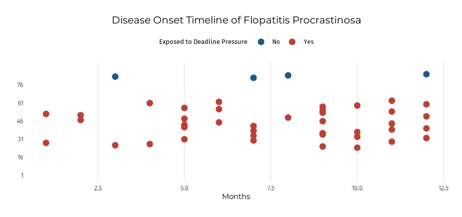

The goal of epic is to provide a one-stop solution for Biostatistics and Epidemiology students going through their statistics courses. Epic contains functions for most of the concepts covered in these introductory courses, allowing the users to put time into solving a problem rather than coming up with syntactically and mathematically sound code to tackle their homework or projects.
Installation
You can install the development version of epic like so:
or you can install it from CRAN:
install.packages("epic")Example
In a small tech company of 400 employees, a sudden outbreak of Flopatitis Procrastinosa (FP)1 occurs. This disease is life-threatening and contagious around major project deadlines. Out of the 400 employees, 85 develop FP for the first time during the follow-up period (12 months). At the end of the year, a survey shows that 130 employees have FP (including both new and previously existing cases).
We hypothesize that the employees who are exposed to frequent deadline pressure, 250 employees, are at a higher risk of developing Flopatitis Procrastinosa. Among these 250 deadline-exposed employees, 63 develop the disease during the year. Among the 150 employees who work in low-pressure positions, 22 develop the disease.
Calculate the prevalence,incidence rate, relative risk and population attributable risk of Flopatitis Procrastinosa.
library(ggplot2)
library(showtext)
font_add_google("Montserrat", "mont")
font_add_google("Fira Sans","fira")
showtext_auto()
title <- "mont"
text <- "fira"
epic::flopatitis |>
na.omit() |>
dplyr::mutate(ID = 1:length(ID)) |>
dplyr::filter(Disease_Onset > 0)-> flopatitis_cases
num_cases <- 85
ggplot(flopatitis_cases,
aes(x = Disease_Onset,
y = ID,
color = Deadline_Pressure)) +
geom_point(size = 5) +
scale_color_manual(values = c("No" = "#1C588C", "Yes" = "#BF3F34")) +
labs(title = "Disease Onset Timeline of Flopatitis Procrastinosa",
x = "Months",
y = NULL,
color = "Exposed to Deadline Pressure") +
scale_y_continuous(breaks = seq(1, num_cases, by = 15),
limits = c(0, num_cases + 5), # Adding extra space
expand = c(0.05, 0.05)) + # Adding space at the top and bottom
theme_minimal() +
theme(legend.text = element_text(family = text, size = 9),
legend.title = element_text(family = text, size = 10),
legend.position = "top",
panel.grid.major.y = element_blank(), # Remove horizontal gridlines
panel.grid.minor = element_blank(),
plot.margin = margin(20, 20, 20, 20),
plot.title = element_text(family = title,size = 15,
hjust = .5),
axis.title = element_text(family = title, size = 11,
hjust = .5),
axis.text = element_text(family = text,size = 9)
)
#library(epic)
# Calculate prevalence @ T0
prevalence(45,400)
# Calculate incidence
pt <- person_time(flopatitis,12,
"Deadline_Pressure",
"Disease_Onset",
onset_class = "char",
use_na = TRUE) |> rowSums()
incidence(85,pt)What is special about using README.Rmd instead of just README.md? You can include R chunks like so:
df <- data.frame(
Gender = rep(c("Male", "Female", "Male", "Female", "Male"),
each = 1000),
Smoker = rep(c("Yes", "Yes", "No", "No", "No"),
each = 1000),
Age_group = rep(c("Adult", "Child", "Adult", "Adult", "Child"),
each = 1000)
)
# make_nway_table(df,"Gender","Smoker")
# Smoker
# Gender No Yes
# Female 1000 1000
# Male 2000 1000You’ll still need to render README.Rmd regularly, to keep README.md up-to-date. devtools::build_readme() is handy for this.
In that case, don’t forget to commit and push the resulting figure files, so they display on GitHub and CRAN.